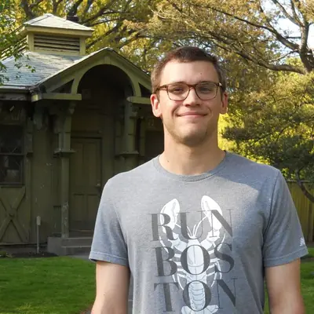

Hello, I’m Brady.
I completed my B.S. in Psychology at the University of Minnesota Twin Cities and now work as a Research Professional in the Sensory Optimization & Neural Implant Coding Lab and the Center for Applied & Translational Sensory Science.
I am applying to PhD programs in hearing science and auditory neuroscience for Fall 2027.
How I got here
I didn’t come into research with a plan to study hearing. After transferring from Gustavus to the University of Minnesota, I was awarded a Dean’s First-Year Research and Creative Scholars award my sophomore year, which put me in Andrew Oxenham’s lab for a semester of EEG training on a speech-in-speech listening effort study. I applied for a summer UROP to keep working on that dataset, and I’ve been involved in auditory research since.
When I get curious about something, I am typically the type of person to go all in on it, and that has taken me to a lot of different work: phonotaxis experiments with treefrogs in Mark Bee’s lab, a reward-prediction study in Jean-Paul Noel’s lab, a review of 300+ behavioral health instruments for the Institute for Health Informatics, administering hearing screenings from a mobile van, and now testing development for an auditory nerve implant.
Before research, I spent 14 months as a mental health advocate in supportive housing and planned to go into counseling. Now, I still want my work to help people directly. What keeps me in hearing research is that it can improve outcomes for cochlear implant users, people with hearing loss, and older adults dealing with cognitive decline.
Training & tools
- Psychophysics, EEG (BioSemi, EEGLAB), and pupillometry (Tobii Pro Spectrum)
- Audiometric threshold testing; stimulus verification with oscilloscope and Picoscope measurement
- Statistical modeling in R and MATLAB: GAMMs, linear mixed-effects, regression
- Human-subjects research under IRB, HIPAA, and GCP; animal research under IACUC protocols
Outside the lab
I swam competitively at Gustavus Adolphus College, spend time outdoors, and am kept company by two cats. I also enjoy playing guitar. Some of my activities end up in the photo galleries.